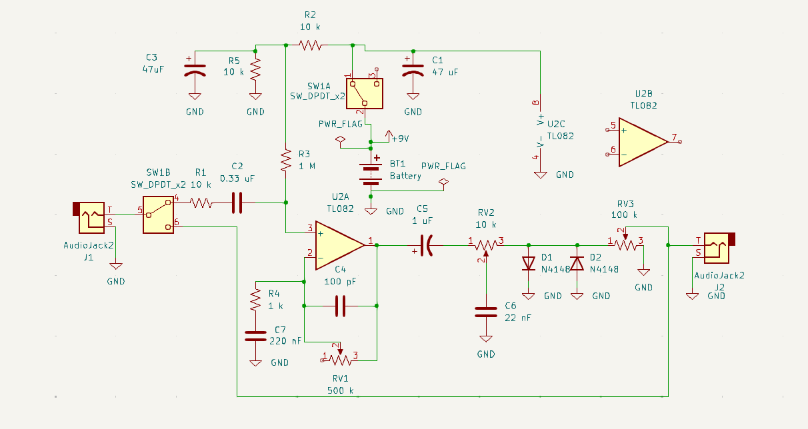
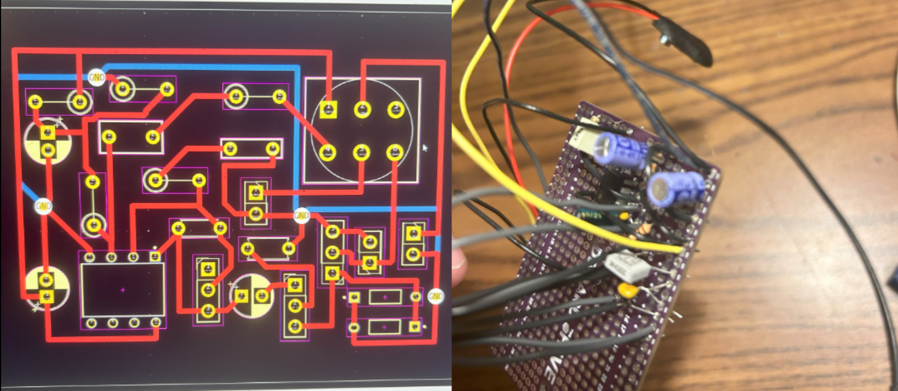
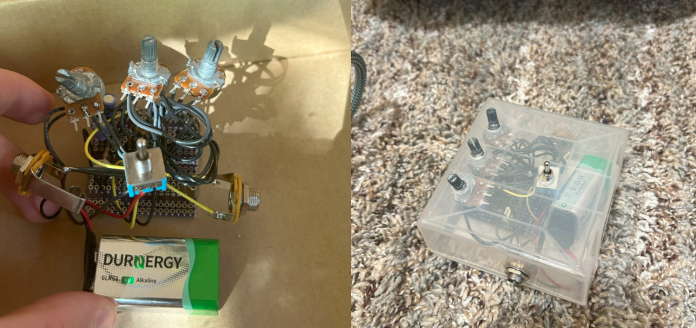

Planning
I chose to make a distortion pedal because I wanted to learn more about analog signal processing. Distortion pedals work by taking a signal, amplifying it, and clipping off the highest amplitude portions. I also learned that you can put the diodes in the feedback loop of the op amp or directly on the output signal. In the feedback loop, they effectively limit the current that can flow through the resistor and step down the gain if the output is too high, causing soft clipping. On the output, they completely flatten the peaks, causing hard clipping.
I made the schematic in KiCAD because I wanted to ultimately print it on a PCB. My design uses hard clipping, which makes it a distortion "pedal". I used a DPDT switch to add three settings: Pass-Through, Off, and On. In reality, my design is not quite a pedal, because it uses a toggle switch rather than a foot pedal actuated switch. My design has three potentiometers. RV1 controls the gain on the op amp. RV2 is a variable low pass filter. RV3 is a variable voltage divider for volume control.
The upper part of the circuit is the power section. It uses a 9V battery and a voltage divider circuit to set the area in between R2 and R5 to 4.5V. This is helpful for the op amp because the op amp is supplied with ground and 9V, which means that those are the max and min voltages that it can pull the output to. The extra capacitors to ground help stabilize the power section of the circuit and filter away unwanted high frequency noise.
The op amp is set up to be non inverting. The incoming signal is passed through a coupling capacitor so it can be biased at 4.5V. Then that is fed into the non inverting input. The inverting input is connected in a feedback loop to the output, so when the non inverting input goes up, the output goes up, keeping the inputs at the same voltage. RV1 controls how much the output would have to go up in order to match a corresponding voltage change in the incoming guitar signal. When it has a higher resistance, there is a greater voltage drop across RV1 and it takes a larger swing in the output to keep the inputs matching, and vice versa.
You may wonder why the diodes are placed after the variable low pass filter. The clipping introduces a bunch of harmonics, so wouldn't it be better to give you the freedom to control if those harmonics are filtered or not? That was my guess at first, but when I breadboarded it, I tried a bunch of different configurations with the diodes, and this sounded best. The sound seemed to get kind of muddy if you filtered out the harmonics after clipping, so I ended up using the pictured configuration in the final design.
Breadboard Prototyping
To test the design, I used a breadboard and wire wrapping. The layout on the breadboard is approximately the same as the layout in the schematic with respect to the jacks and potentiometers. However, the switch has not been implemented at this point.
In the breadboard demo video, I adjust the gain, tone, and volume potentiometers to demonstrate their effects.
Incidentally, when I set the tone control just right, the pedal had a tendency to tune in to a Latin music radio station.
Assembly
I added footprints for all the symbols, and turned the schematic into a PCB layout in KiCAD. At first, I tried to just make it in one layer to avoid using vias that I would have to electroplate. This is due to the fact that I would have to go through a training process to use GT's electroplating equipment. However, after a while, I realized that it was not as simple as I had thought. I started to think that it was actually impossible to make on one layer due to some loops that traces necessarily made around footprints, isolating other areas that needed traces. So, I decided I would make it two layers and just solder a lead in the via instead of electroplating it. The two layer design is pictured. It is a little bit more convoluted than it would have been if I had started out with a two layer design, but I had an attempted one layer that I converted to two layer.
My plan was to print this using GT's PCB drill and laser in the Hive makerspace. However, when I went to try and use it, the drill was not in working order. I opted to make it on protoboard instead. It would be a little bit more messy that way, but about the same size. I used the type of protoboard that has built in traces in the same configuration as a breadboard. I was able to get it much smaller than the breadboard, since at this point I was not trying to go for ease of understanding the circuit. I cut of the rest of the board that I wasn't using, since there was no risk of cutting traces or bridging anything that shouldn't be bridged.
Testing
In the first video, I demonstrate the pass-through setting first. Without changing the amp settings (except the volume), I then turn the pedal to ON. This means that the difference between the clean PT sound and the distorted ON sound is caused solely by the pedal. Then I demonstrate the effects of the potentiometers (labeled G, T, and V for gain, tone, and volume). The second video is a demo of what it sounds like when I have dialed in the settings.
Overall, I was happy with the way this project turned out. It functioned better than I thought it would. I would have liked for it to have a foot pedal switch, but I doubt I will be using it for any live performance.